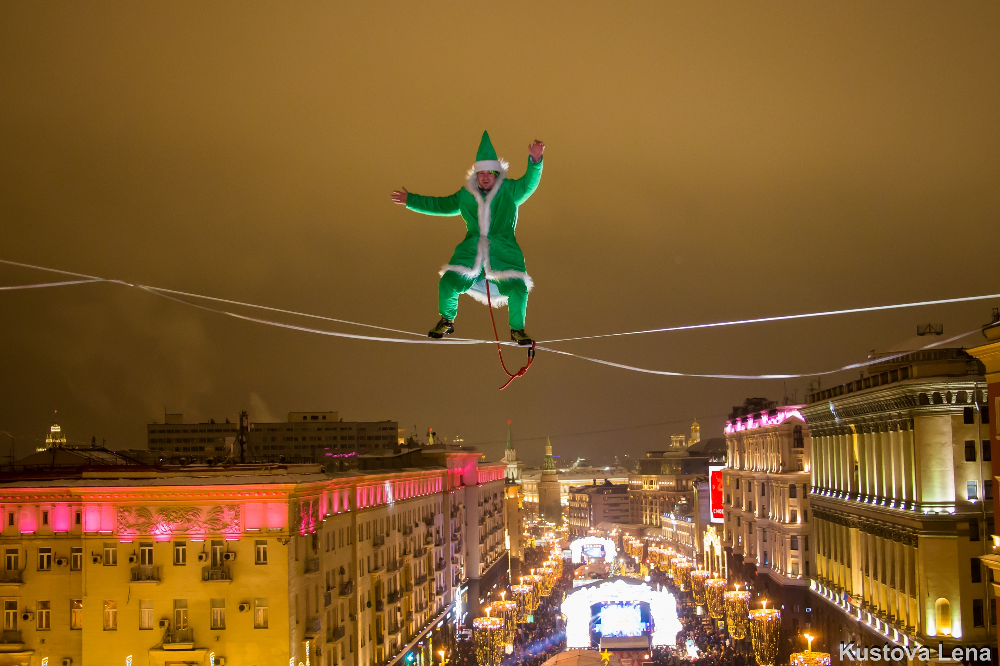

Привет! Мы занимаемся слэклайном, учим этому других людей, путешествуем со стропами и реализуем крутые проекты. Присоединяйся к нам!


Привет! Мы занимаемся слэклайном, учим этому других людей, путешествуем со стропами и реализуем крутые проекты. Присоединяйся к нам!
Было организовано более 30 слэклайн площадок на различных фестивалях, среди которых самая крупная на день города Москвы на фестивале «Цветочный джем» и на новый год на фестивале "Путешествие в рождество", для реализации которых потребовалось организовать производство конструкций и пригласить спортсменов из разных городов России.
Более 60 хайлайн проектов разной степени сложности, среди которых было множество рекордов России по навеске и прохождению. Множество проектов получило международное признание из-за сложности реализацииb. Одни из первых в Москве, кто начал устанавливать хайлайны между любыми обЪектами.
Было проведено около 300 открытых тренировок, где любой желающий мог начать заниматься слэклайном под руководством опытного инструктора. Свои первые шаги сделали более 30000 человек, многие из которых приобрели собственное снаряжение и продолжили развиваться в данном направлении. Постоянно проводятся и тренировки по хайлайнам, куда зовём начинающих попробовать свои силы.